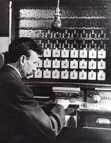

Herman Hollerith patentierte eine Maschine, die Daten auf Lochkarten auswerten konnte. Für die 11. Volkszählung der USA hatten sich neben Hollerith mehrere Unternehmer beworben. Die Mitbewerber verwendeten dabei farbige Karteikarten, die von Hand sortiert und gezählt werden mussten. Bei einem Vergleichstest waren Holleriths Maschinen den anderen Verfahren weit überlegen, was dazu führte, dass seine Maschinen die Auswertung der Daten vornehmen durften. Demnach hatte die USA damals 62.622.250 Einwohner. Sein Unternehmen, die "Tabulating Machine Company", wurde 1924 zu IBM.